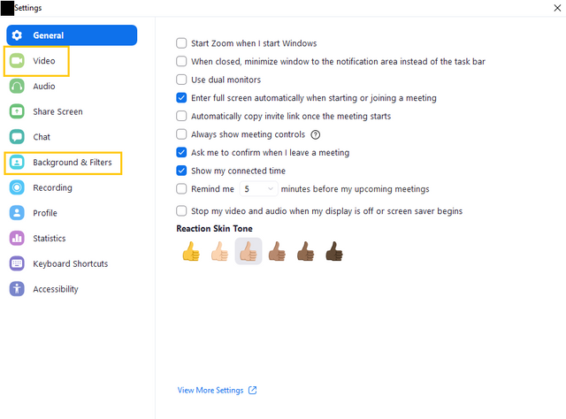
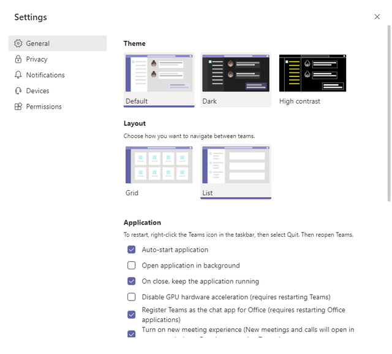
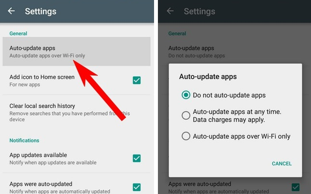

With children remotely attending school through Zoom and the like, families now have multiple surveillance cameras throughout the house, potentially making their homes far less private than they might otherwise be. If your child is using video to attend class virtually, ensure there’s nothing in the background that can give away sensitive information (for example: windows can unknowingly reveal your neighborhood or location, or mirrors in the background can unintentionally expose the entire room to the view of the camera). Hackers can use malicious software like spyware to infiltrate your child’s computer and spy on you and your family through the webcam. Additionally, you don’t know what adults have access to the video feed, especially if the teacher does decide to record the class. Designate an area in your home that your child can use for school that you know is safe, secure and comfortable, ensuring there is nothing privacy-sensitive within view of the cameras.
First, make sure your child isn’t downloading apps for schoolwork that haven’t been vetted by the school. Take a look at the tools your child will be using for school and their respective security settings. For example, if your student will be using Zoom to set up meetings with other pupils to collaborate on school projects, you’ll want to make sure certain features—like only allowing signed-in users to join and the waiting room—are enabled. This protects them from hackers and other unwanted participants from crashing a video call, or “Zoombombing” their calls.
 You likely aren’t using the same devices as your kids, and as a busy mom, it can be tough to closely monitor your kids’ devices to ensure the latest updates are installed that protect kids from hackers. Enabling automatic updates is a great place to start in keeping your children safe online. You’ll want to make sure automatic updates for schools apps and programs on your child’s learning devices are turned on. Developers often launch updates to patch security issues or address specific viruses. If your children’s devices aren’t updating automatically, they could be vulnerable to evolving viruses and malware.
Take a proactive approach and set up parental controls on your child’s devices. You can limit access to certain websites or apps during the school day to prevent your child from getting distracted, or even block websites to prevent your child from accidentally being exposed to inappropriate content. You can’t be everywhere at once and parental controls are your partner in the fight to protect your child online.
A 2019 study by the Cyberbullying Research Center found 39 percent of students have experienced cyberbullying in their lifetimes. NortonLifeLock’s recent study found that children are spending roughly 1.5 more hours in front of screens per day on school days, excluding time spent for school purposes—a 52 percent increase in screen time compared to pre-pandemic. When children are spending more hours connected to the web, they're more likely to encounter cyberbullies. Explain to your children that hurtful comments or pranks delivered online are never OK and that they should immediately come to you if they experience cyberbullying. You can collect evidence by taking screenshots of hostile messages or cruel photos and record any harassing videos, but be sure to eventually block any messages from the bully and tell your child not to communicate with this aggressor. If the bully attends the same school as your child, contact the school or the district office. And if the bully is threatening to harm your child, report this to your local police.